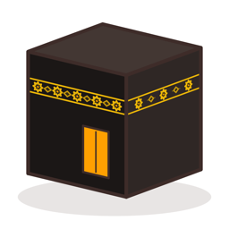

Qiblati قبلتيSupport
If something isn't right, or you have an idea for Qiblati, write to us. We read every message.
Email us
If you're reporting a problem, tell us your device, its iOS version, your city, and what you expected to see. For a direction that looks wrong, a screenshot of the compass view helps a lot.
The direction looks wrong
- Calibrate the compass. Move away from metal, magnets and electronics, then move the phone in a figure 8. The accuracy chip at the top turns green when the compass is good.
- Check it with the sun. In the camera view, aim at the sun and tap. Qiblati measures the compass error and removes it for the session.
- Save the room. Once a room is saved, the phone recognises it next time and shows the Qibla without relying on the compass.
- Allow precise location. In Settings → Privacy & Security → Location Services → Qiblati, turn on Precise Location.
Prayer times
Qiblati picks the usual calculation method for your country. In Morocco it uses the official times of the Ministry of Habous and Islamic Affairs. You can choose another method in the prayer times settings.
Reminders don't arrive
Check that notifications are allowed for Qiblati in Settings → Notifications, and that a Focus mode isn't hiding them.
Privacy
Qiblati has no account, no ads and no tracking. The privacy policy explains exactly what it does with your location and camera.